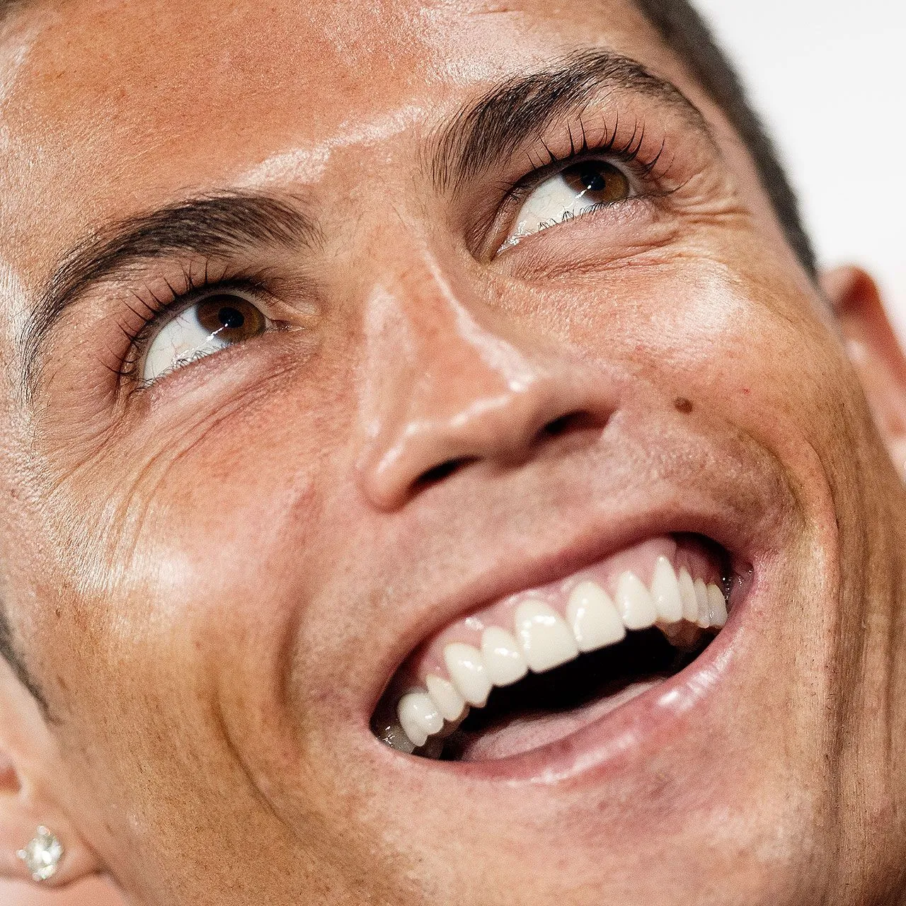

португальский футболист, нападающий и капитан саудовского клуба «Ан-Наср.
Является лучшим бомбардиром в истории национальных сборных.
И просто goat так же как и Messi (хотя он чуть больше GOAT)
- 5 февраля 1985
- Португалия
- 7 number, usually he call him CR7
- крайний полузащитник нападающий
some plases and team he was
| годы | clubs | goals |
|---|---|---|
| 2002–2003 | Спортинг | 5 голов |
| 2003–2009 | Манчестер Юнайтед | 118 голов |
| 2009–2018 | Реал Мадрид | 450 голов |
| 2018–2021 | Ювентус | 101 гол |
things which he can proud of yourself
- Пятикратный обладатель премии «Золотой мяч»
- Пятикратный победитель Лиги чемпионов УЕФА
- Чемпион Европы (2016) и победитель Лиги наций УЕФА (2019) в составе сборной Португалии
- Лучший бомбардир в истории Лиги чемпионов УЕФА и мадридского «Реала»
- GOAT